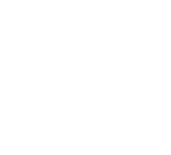
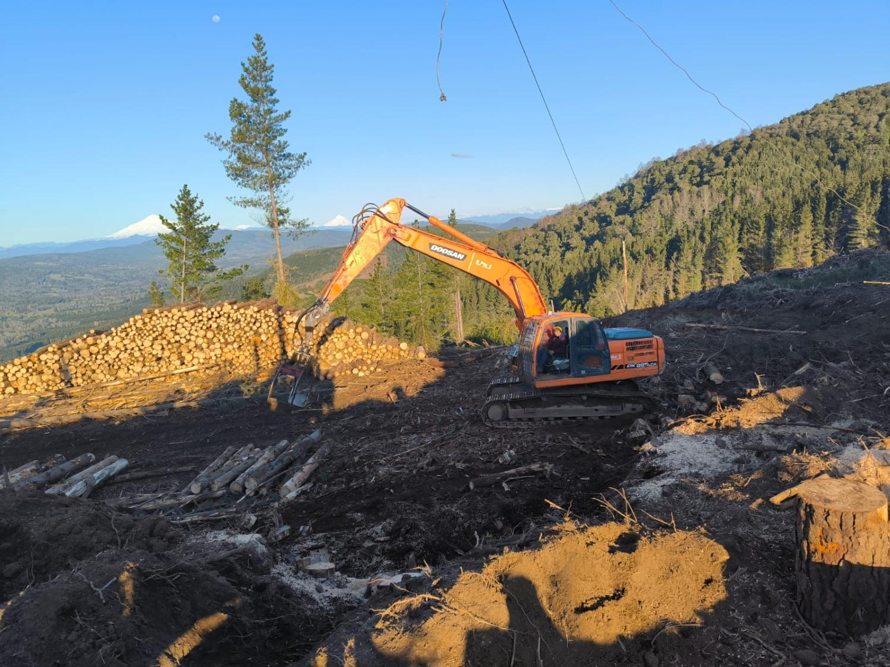
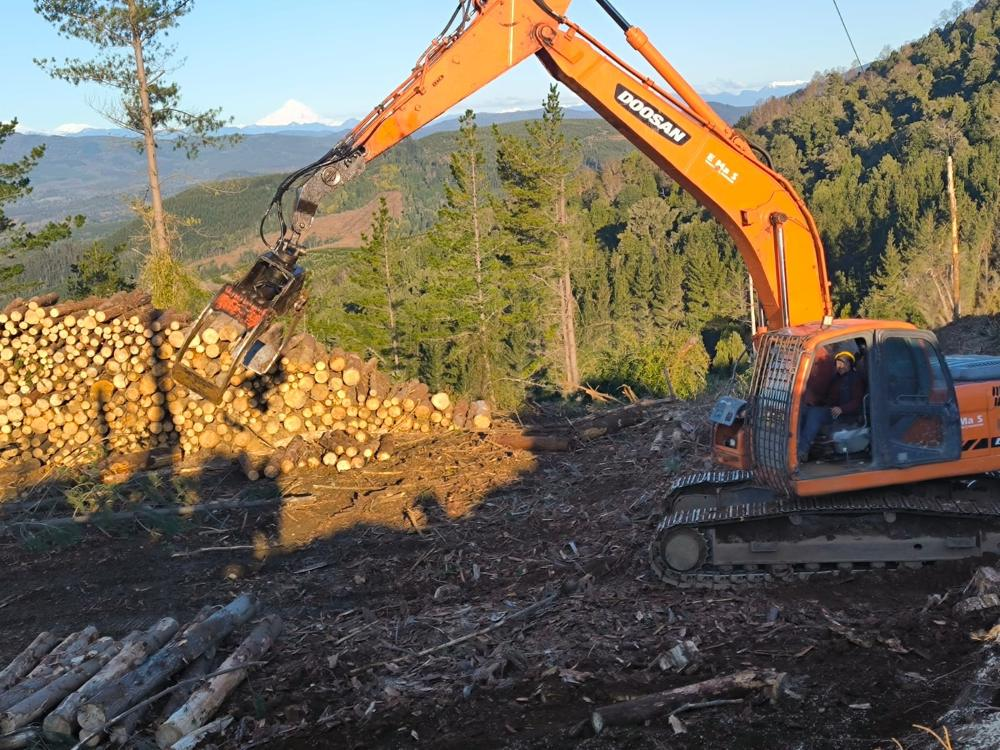
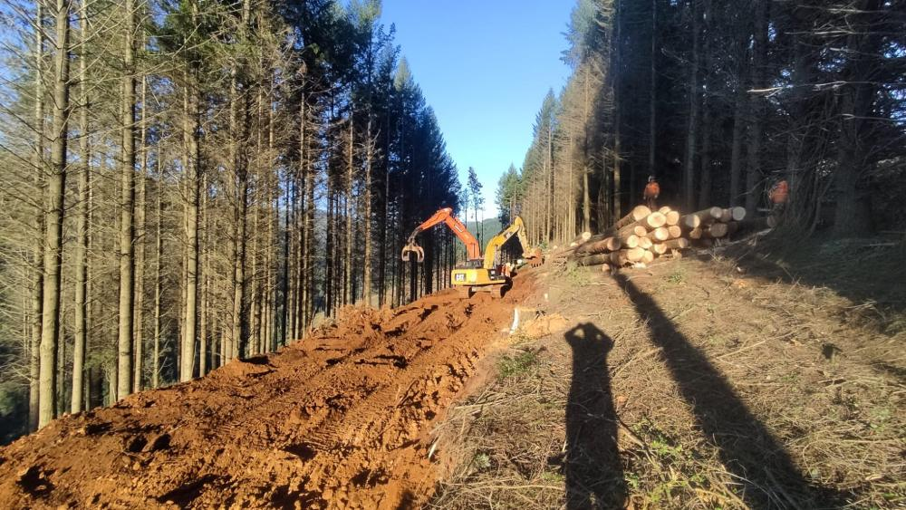
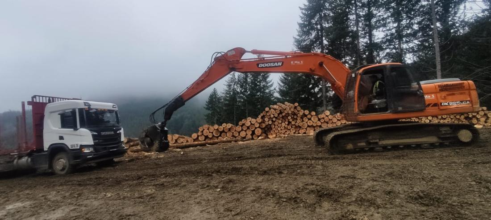

Torre de madereo
Extracción en pendiente sobre 30%
- Sistema
- Cable aéreo — línea y carro
- Anclaje
- Vientos a tocones o muertos
- Cuadrilla
- Operador · estroberos · desestrobador

Cotizar faenaLoncoche · Región de La Araucanía
Torre de madereo para la ladera sobre 30% de pendiente. Skidder, excavadora con garra y Bell trineumático para el plano y la cancha. Cuadrillas propias de motosierristas, estroberos y calibradores.
Sistema de extracción
Un skidder en ladera fuerte compacta el suelo, erosiona la quebrada y expone a la gente. La torre se instala arriba, en la cancha, se afianza con vientos y tiende un cable de acero hasta un anclaje al otro extremo. Los fustes suben suspendidos: ninguna máquina pisa la ladera.
La torre se monta arriba, en terreno firme, y se afianza con vientos a tocones o muertos enterrados. Desde ahí manda toda la línea.
El cable principal se tiende hasta el anclaje del fondo. El carro corre por él, baja vacío y sube cargado.
Abajo, el estrobero engancha cada fuste al carro. Es el oficio más duro de la faena y el que define el rendimiento de la línea.
El fuste viaja suspendido o semisuspendido. Menor daño al suelo, cursos de agua protegidos y madera donde otros no llegan.
Alcance del servicio
Siete operaciones, un solo responsable. El mandante coordina con una empresa, no con seis.
El motosierrista derriba orientando la caída hacia la línea de madereo. Corte de dirección y corte de caída.
Se limpia el fuste de ramas, en el punto de volteo o en cancha según el sistema que corresponda.
Torre de cable en pendiente fuerte. Skidder, Bell o excavadora en terreno plano a moderado.
A los largos de la pauta del mandante: pulpable de 2,44 m, aserrable según pedido. Una troza mal cortada pierde valor.
El calibrador mide diámetro y largo troza por troza, y separa por producto. De ahí sale el valor real del rodal.
Rumas ordenadas y camiones cargados con la garra de la excavadora. Una cancha ordenada es una faena segura.
Salida controlada con guía electrónica: cada troza acredita su origen desde el rodal hasta la romana.
En pendiente sobre 30%, torre.
En plano y moderado, skidder, Bell y excavadora. El terreno decide el sistema, no al revés.

Cancha en altura
La cancha se construye antes que se corte el primer árbol.
Equipos propios
Máquinas propias, operadores propios. Sin subcontratar el equipo que hace el trabajo.
Extracción en pendiente sobre 30%

Cancha, carguío y madereo por paleo

Arrastre en terreno plano a moderado

Clasificación y acopio en cancha
Dotación
Cuadrillas estables de la zona, no gente distinta cada semana. En cosecha, la experiencia del equipo es la diferencia entre una faena rentable y una faena con accidentes.
Volteo dirigido, desrame y trozado. Corte de dirección y corte de caída: el oficio base de toda la faena, y el que exige más criterio en ladera.
EPP completo: casco, facial, auditiva, pantalón anticorte
Enganchan cada fuste al carro del cable, abajo en la ladera. De su ritmo depende el rendimiento de toda la línea de madereo.
Trabajo bajo procedimiento de línea de cable
Miden diámetro y largo troza por troza y clasifican por producto según la pauta del mandante. Aquí se decide el valor real del rodal.
Control de calidad y trazabilidad en cancha
Torre, excavadora, skidder y Bell. Operadores propios con horas reales en cada máquina, no reemplazos de temporada.
Mantención preventiva del equipo a cargo
Cuidado del terreno
El predio queda después de que nos vamos, y en Loncoche los vecinos son los mismos de siempre. Cuidar el terreno no es una cláusula del contrato: es la condición para que nos vuelvan a llamar.
Seguridad y cumplimiento
Es la única meta de producción que no se negocia. Todo lo demás de esta sección existe para cumplirla.
EPP completo en toda la cuadrilla: casco, protección facial y auditiva, pantalón anticorte.
Procedimientos de trabajo seguro por oficio: volteo, desrame, trozado y línea de cable.
Charla de seguridad antes de comenzar cada jornada, con el frente de trabajo del día.
Ley 16.744 y mutualidad al día para cada trabajador de la faena.
Acreditación documental al día para los reglamentos de empresas contratistas.
Guía de despacho electrónica y trazabilidad de la madera desde el origen.
Operamos bajo los estándares FSC y CERTFOR/PEFC que exigen las principales forestales del país.
Trayectoria
Forestal Robur es una empresa familiar de Loncoche. No hay gerencias ni comités: se habla directo con los dueños, y las decisiones se toman en el día.
Trabajamos para forestales y también para particulares con predios chicos, que muchas veces no encuentran contratista dispuesto a entrar a una ladera difícil.